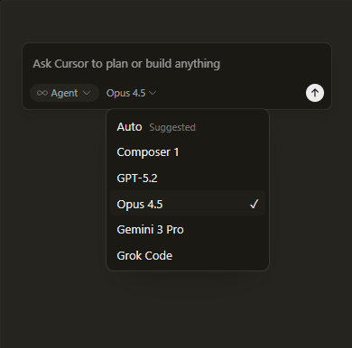
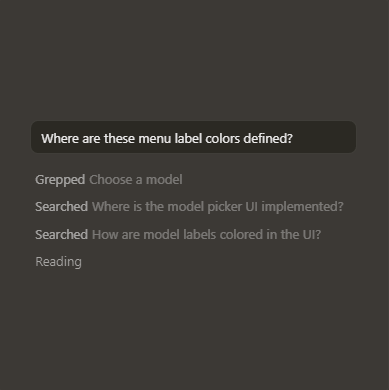

Trusted every day by millions of professional developers.


Trusted every day by millions of professional developers.
It was night and day from one batch to another, adoption went from single digits to over 80%. It just spread like wildfire, all the best builders were using Cursor.
The most useful AI tool that I currently pay for, hands down, is Cursor. It's fast, autocompletes when and where you need it to, handles brackets properly, sensible keyboard shortcuts, bring-your-own-model... everything is well put together.
The best LLM applications have an autonomy slider: you control how much independence to give the AI. In Cursor, you can do Tab completion, Cmd+K for targeted edits, or you can let it rip with the full autonomy agentic version.
Cursor quickly grew from hundreds to thousands of extremely enthusiastic Stripe employees. We spend more on R&D and software creation than any other undertaking, and there's significant economic outcomes when making that process more efficient and productive.
It's official.
I hate vibe coding.
I love Cursor tab coding.
It's wild.
It's definitely becoming more fun to be a programmer. It's less about digging through pages and more about what you want to happen. We are at the 1% of what's possible, and it's in interactive experiences like Cursor where models like GPT-5 shine brightest.
Choose between every cutting-edge model from OpenAI, Anthropic, Gemini, xAI, and Cursor.
Explore models ↗ Choose between every cutting-edge model from OpenAI, Anthropic, Gemini, xAI, and Cursor.
Explore models ↗ Choose between every cutting-edge model from OpenAI, Anthropic, Gemini, xAI, and Cursor.
Explore models ↗2.4
Jan 22, 2026
Subagents, Skills, and Image Generation
2.4
Jan 22, 2026
Subagents, Skills, and Image Generation
2.4
Jan 22, 2026
Subagents, Skills, and Image Generation
2.4
Jan 22, 2026
Subagents, Skills, and Image Generation